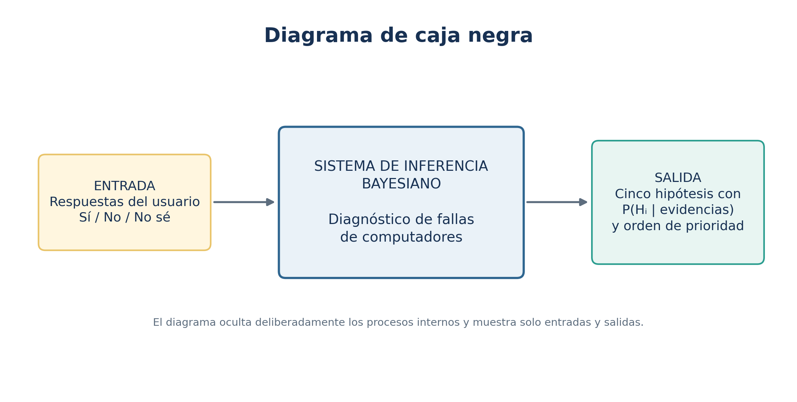
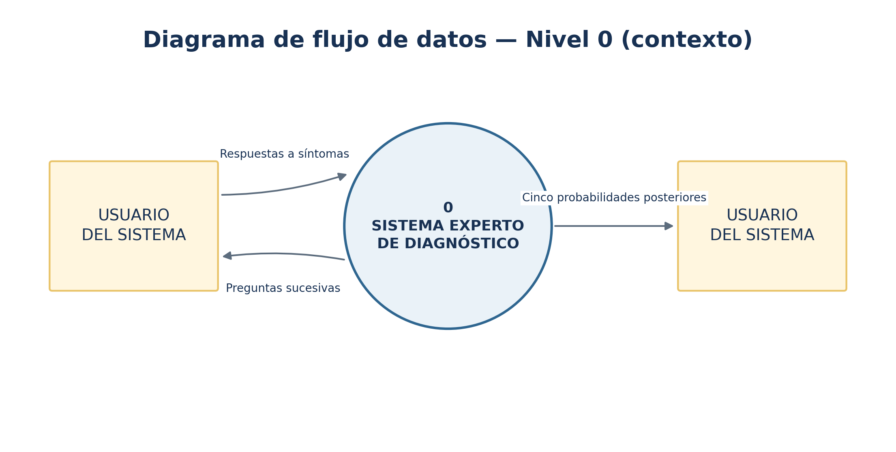
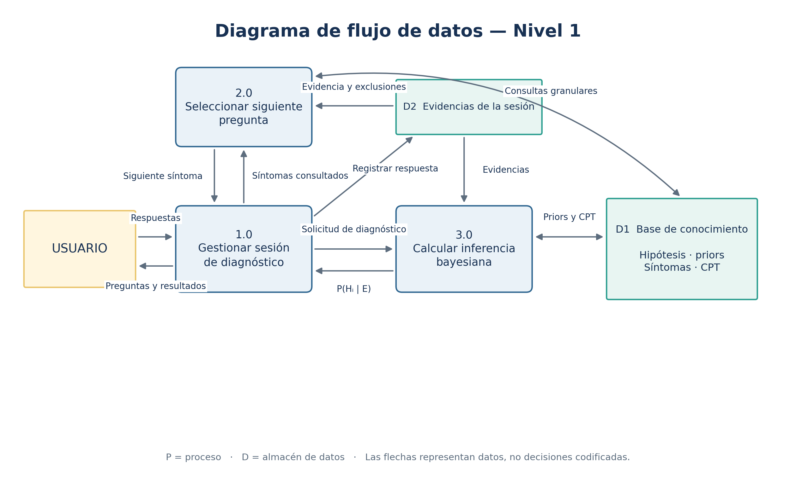
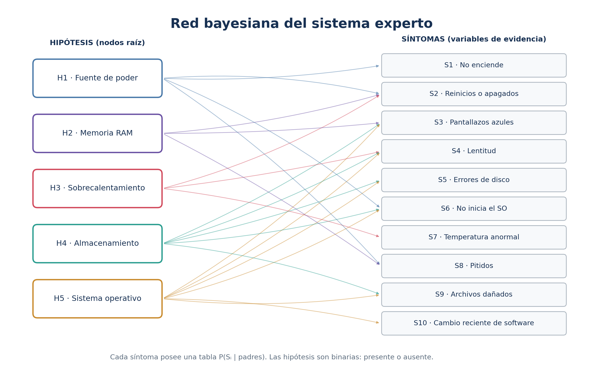
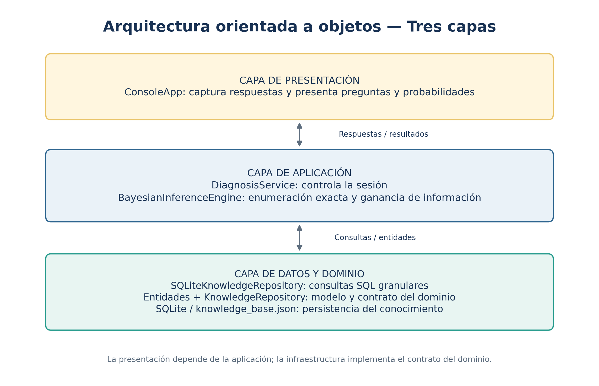

Diagnóstico probabilístico de fallas de computadores
El sistema identifica cinco hipótesis de falla en un computador y calcula su probabilidad posterior a partir de las respuestas del usuario. El dominio seleccionado es el diagnóstico inicial de fallas de hardware y de sistema operativo. La solución utiliza una red bayesiana discreta, inferencia exacta y una base de conocimiento externa al código.
Las cinco hipótesis son binarias —presencia o ausencia de cada falla— y pueden coexistir. Por esta razón, cada resultado es una probabilidad marginal independiente y los cinco porcentajes no tienen que sumar 100 %. Las probabilidades iniciales y las tablas condicionales son valores académicos configurables, no estadísticas reales de incidencia.
La entrada está formada por respuestas «sí», «no» o «no sé» a síntomas observables. La salida es la lista de cinco hipótesis con su probabilidad a priori, su probabilidad posterior y su orden de prioridad.

El usuario intercambia respuestas, preguntas y resultados con un único proceso general. La repetición de la entidad usuario a ambos lados se emplea únicamente para facilitar la lectura.

El nivel 1 descompone el sistema en gestión de la sesión, selección de la siguiente pregunta e inferencia bayesiana. D1 almacena el conocimiento persistente; D2 representa la evidencia de la sesión actual.

| ID | Hipótesis | Interpretación | P(Hᵢ) |
|---|---|---|---|
| H1 | Fuente de poder defectuosa | La fuente no entrega energía estable o suficiente. | 8% |
| H2 | Memoria RAM defectuosa | Un módulo o la configuración de memoria produce errores. | 10% |
| H3 | Sobrecalentamiento | La refrigeración insuficiente provoca inestabilidad o apagados. | 12% |
| H4 | Falla de almacenamiento | El disco presenta daños físicos, lógicos o errores de acceso. | 9% |
| H5 | Sistema operativo corrupto | Archivos, controladores o configuraciones del sistema están dañados. | 11% |
Cada síntoma es una variable binaria. La columna «Padres» indica las hipótesis de las que depende directamente su tabla de probabilidad condicional (CPT).
| ID | Pregunta presentada al usuario | Padres |
|---|---|---|
| S1 | ¿El equipo no enciende o no muestra señales de energía? | H1 |
| S2 | ¿El equipo se reinicia o se apaga de forma inesperada? | H1, H2, H3 |
| S3 | ¿Se presentan pantallazos azules o errores críticos? | H2, H4, H5 |
| S4 | ¿El equipo presenta lentitud notable durante su uso habitual? | H3, H4, H5 |
| S5 | ¿Se detectan errores de lectura, escritura o sectores defectuosos? | H4, H5 |
| S6 | ¿El sistema operativo no inicia correctamente? | H1, H4, H5 |
| S7 | ¿La temperatura es alta o los ventiladores funcionan de forma anormal? | H3 |
| S8 | ¿Se escuchan pitidos de diagnóstico durante el arranque? | H1, H2 |
| S9 | ¿Aparecen archivos dañados o aplicaciones que se cierran inesperadamente? | H4, H5 |
| S10 | ¿El problema comenzó después de instalar o actualizar software? | H5 |

La red no es un clasificador bayesiano ingenuo: existen cinco nodos de hipótesis y varios síntomas tienen más de un padre. Las CPT completas se incluyen en el apéndice A y en data/knowledge_base.json.
Las hipótesis son independientes a priori. Para una asignación binaria h de las cinco hipótesis y el conjunto de síntomas observados, la distribución conjunta se factoriza así:
Al registrar evidencia E, el motor multiplica el peso previo de cada asignación por la verosimilitud de cada respuesta. Después normaliza todos los pesos dividiéndolos entre P(E). La probabilidad posterior de una hipótesis se obtiene sumando los pesos de las asignaciones en las que esa hipótesis está presente:
Como hay cinco hipótesis binarias, la enumeración exacta evalúa 2⁵ = 32 asignaciones. No se utiliza muestreo ni una aproximación. Una respuesta «no sé» marca la pregunta como consultada, pero no incorpora evidencia ni modifica las probabilidades.
Después de cada respuesta, el sistema calcula la ganancia de información esperada de todos los síntomas aún no consultados. Para ello compara la entropía actual de la distribución conjunta con la entropía posterior esperada después de responder «sí» o «no»:
La siguiente pregunta es la de mayor ganancia. Este mecanismo evita un orden rígido de preguntas y reduce la incertidumbre usando la evidencia disponible. Las consultas a la base son pequeñas y sucesivas: obtener hipótesis, obtener un síntoma, obtener una pregunta y obtener la CPT de un síntoma.
| Método | Dato recuperado |
|---|---|
get_hypotheses() | Identificadores, descripciones y probabilidades iniciales. |
get_symptoms() | Lista de variables observables. |
get_symptom(id) | Un síntoma y sus padres. |
get_question(id) | El texto de una pregunta. |
get_cpt(id) | Solo la tabla condicional del síntoma solicitado. |

| Clase | Responsabilidad |
|---|---|
ConsoleApp | Captura entradas y presenta resultados; no contiene conocimiento. |
DiagnosisService | Controla la sesión, las respuestas y las preguntas ya realizadas. |
BayesianInferenceEngine | Realiza inferencia exacta y calcula ganancia de información. |
KnowledgeRepository | Define el contrato abstracto de acceso al conocimiento. |
SQLiteKnowledgeRepository | Implementa las consultas SQL granulares. |
Hypothesis, Symptom, ConditionalProbabilityTable | Modelan las entidades del dominio. |
src/ ├── presentation/console_app.py ├── application/diagnosis_service.py ├── application/inference_engine.py ├── domain/entities.py ├── domain/knowledge_repository.py └── infrastructure/sqlite_knowledge_repository.py
Se evaluó el siguiente caso: el sistema operativo no inicia correctamente (S6 = sí), el equipo sí presenta señales de energía (S1 = no), existen errores de lectura o escritura (S5 = sí) y el problema comenzó después de un cambio de software (S10 = sí).
| ID | Hipótesis | Prior | Posterior |
|---|---|---|---|
| H5 | Sistema operativo corrupto | 11% | 86.35% |
| H4 | Falla de almacenamiento | 9% | 35.21% |
| H3 | Sobrecalentamiento | 12% | 12.00% |
| H2 | Memoria RAM defectuosa | 10% | 10.00% |
| H1 | Fuente de poder defectuosa | 8% | 0.94% |
La evidencia favorece principalmente H5. H4 conserva una probabilidad relevante porque los errores de disco también pueden originarse en una falla de almacenamiento. H1 disminuye debido a la presencia de energía. H2 y H3 no cambian porque ninguna de las evidencias del ejemplo depende de ellas.
El proyecto incluye seis pruebas automatizadas que se ejecutaron correctamente.
| Prueba | Comprobación |
|---|---|
| Sin evidencia | Las cinco posteriores coinciden con sus priors. |
| Síntoma de energía positivo | Aumenta la probabilidad de H1 y todas permanecen entre 0 y 1. |
| Síntoma de disco negativo | Disminuye la probabilidad de H4. |
| Respuesta «no sé» | No altera la evidencia y evita repetir la pregunta. |
| Ranking de preguntas | Incluye diez síntomas y ganancias no negativas ordenadas. |
| Integridad de CPT | Cada tabla contiene las 2ⁿ combinaciones de sus padres. |
El proyecto requiere Python 3.10 o superior y no utiliza dependencias externas. Desde la raíz del proyecto:
# 1. Ejecutar el sistema experto python main.py # 2. Ejecutar las seis pruebas automatizadas python -m unittest discover -s tests -v
La primera ejecución crea data/knowledge.db. Para modificar el conocimiento se edita data/knowledge_base.json, se elimina la base generada y se vuelve a ejecutar el programa. Los diagramas se entregan en PNG, SVG y fuentes Mermaid editables.
Alcance: el sistema prioriza hipótesis para orientar el diagnóstico. No confirma físicamente una falla ni reemplaza procedimientos técnicos de comprobación.
En cada fila, 1 significa «hipótesis presente» y 0 «hipótesis ausente». Las columnas contienen las probabilidades de observar el síntoma condicionadas al estado de sus padres.
| Estados de los padres | P(S1=sí | padres) | P(S1=no | padres) |
|---|---|---|
| H1=0 | 0.02 | 0.98 |
| H1=1 | 0.90 | 0.10 |
| Estados de los padres | P(S2=sí | padres) | P(S2=no | padres) |
|---|---|---|
| H1=0, H2=0, H3=0 | 0.03 | 0.97 |
| H1=1, H2=0, H3=0 | 0.48 | 0.52 |
| H1=0, H2=1, H3=0 | 0.38 | 0.62 |
| H1=0, H2=0, H3=1 | 0.62 | 0.38 |
| H1=1, H2=1, H3=0 | 0.68 | 0.32 |
| H1=1, H2=0, H3=1 | 0.78 | 0.22 |
| H1=0, H2=1, H3=1 | 0.76 | 0.24 |
| H1=1, H2=1, H3=1 | 0.90 | 0.10 |
| Estados de los padres | P(S3=sí | padres) | P(S3=no | padres) |
|---|---|---|
| H2=0, H4=0, H5=0 | 0.02 | 0.98 |
| H2=1, H4=0, H5=0 | 0.58 | 0.42 |
| H2=0, H4=1, H5=0 | 0.35 | 0.65 |
| H2=0, H4=0, H5=1 | 0.65 | 0.35 |
| H2=1, H4=1, H5=0 | 0.70 | 0.30 |
| H2=1, H4=0, H5=1 | 0.82 | 0.18 |
| H2=0, H4=1, H5=1 | 0.76 | 0.24 |
| H2=1, H4=1, H5=1 | 0.92 | 0.08 |
| Estados de los padres | P(S4=sí | padres) | P(S4=no | padres) |
|---|---|---|
| H3=0, H4=0, H5=0 | 0.05 | 0.95 |
| H3=1, H4=0, H5=0 | 0.50 | 0.50 |
| H3=0, H4=1, H5=0 | 0.65 | 0.35 |
| H3=0, H4=0, H5=1 | 0.60 | 0.40 |
| H3=1, H4=1, H5=0 | 0.78 | 0.22 |
| H3=1, H4=0, H5=1 | 0.75 | 0.25 |
| H3=0, H4=1, H5=1 | 0.85 | 0.15 |
| H3=1, H4=1, H5=1 | 0.93 | 0.07 |
| Estados de los padres | P(S5=sí | padres) | P(S5=no | padres) |
|---|---|---|
| H4=0, H5=0 | 0.01 | 0.99 |
| H4=1, H5=0 | 0.82 | 0.18 |
| H4=0, H5=1 | 0.30 | 0.70 |
| H4=1, H5=1 | 0.90 | 0.10 |
| Estados de los padres | P(S6=sí | padres) | P(S6=no | padres) |
|---|---|---|
| H1=0, H4=0, H5=0 | 0.02 | 0.98 |
| H1=1, H4=0, H5=0 | 0.20 | 0.80 |
| H1=0, H4=1, H5=0 | 0.72 | 0.28 |
| H1=0, H4=0, H5=1 | 0.80 | 0.20 |
| H1=1, H4=1, H5=0 | 0.78 | 0.22 |
| H1=1, H4=0, H5=1 | 0.85 | 0.15 |
| H1=0, H4=1, H5=1 | 0.90 | 0.10 |
| H1=1, H4=1, H5=1 | 0.95 | 0.05 |
| Estados de los padres | P(S7=sí | padres) | P(S7=no | padres) |
|---|---|---|
| H3=0 | 0.08 | 0.92 |
| H3=1 | 0.85 | 0.15 |
| Estados de los padres | P(S8=sí | padres) | P(S8=no | padres) |
|---|---|---|
| H1=0, H2=0 | 0.01 | 0.99 |
| H1=1, H2=0 | 0.35 | 0.65 |
| H1=0, H2=1 | 0.75 | 0.25 |
| H1=1, H2=1 | 0.85 | 0.15 |
| Estados de los padres | P(S9=sí | padres) | P(S9=no | padres) |
|---|---|---|
| H4=0, H5=0 | 0.04 | 0.96 |
| H4=1, H5=0 | 0.55 | 0.45 |
| H4=0, H5=1 | 0.65 | 0.35 |
| H4=1, H5=1 | 0.85 | 0.15 |
| Estados de los padres | P(S10=sí | padres) | P(S10=no | padres) |
|---|---|---|
| H5=0 | 0.08 | 0.92 |
| H5=1 | 0.75 | 0.25 |